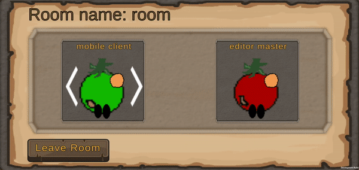
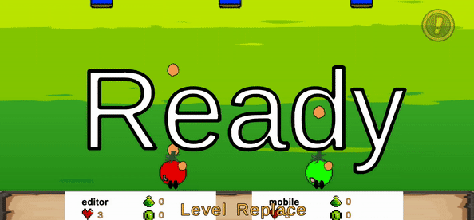

First Android Game - Part 7 - Photon Transform Classic View InvestigationJuly 20, 2023This is part 7 of making my first Android Game. If you missed part6, you can find it hereThe component PhotonTransformClassicView has 5 interpolate options. First one is disabled. This means no Interpolation is done. Whenever a new position update arrives, it is immediately applied to the GameObject. As you can see below from the mobile client side, the transform is smooth and updated right awayNext is Fixed Speed. I set the MoveTowardsSpeed to 1. According to the documentation from Photon - Whenever a new position update arrives it is stored in a temporary variable and the character is being moved towards it using a fixed speed. This is useful for scenarios where you know the speed at which the synchronized object is travelling, which then results in very smooth movements. If the actual speed is changing however, or if the MoveTowards Speed value is different than the actual speed the object is travelling at, the movement will be jumpy. As you can see from the results below, it looks smooth and normal, however if you compare it to the editor master, the mobile client is a little slow

Next is Estimated Speed. According to the documentation from Photon - the character is smoothly moved towards the last received position update. However this mode tries to estimate the objects speed by looking at the position difference of the newest update and the last one. This works best for objects that only change their speed slowly like vehicles. As you can see from the results below, the cannon is taking a long time to reach the destination making it obvious that the transform is not synced

Next is Synchronize Values. According to the documentation from Photon - In this mode the original object is sending its actual speed with each update so it can be used for interpolation. This works great if your character has sudden changes in velocity like in a jump and run where you can move left and right at will. This mode will send more data though since the movement speed and turn speed is synchronized as well. A script on the GameObject should call SetSynchronizedValues(Vector3 speed, float turnSpeed) to modify speed and turnspeed at runtime and update the synchronized values. As your movement script often already knows the speed at which the GameObject is moving, this mode often gives the smoothest results. From the result below, it looks smooth and seems to match transformLast is Lerp with the lerp speed set to 1. According to the documentation from Photon -Similar to MoveTowardsWithFixedSpeed but instead of using the MoveTowards function, the Lerp function is used. This results in a rubber band effect for the synchronized object. You can see, the enemy cannon takes a while to reach the end destination. It is also obvious because the cannon will shoot potato enemies, and the potato enemies looks like it's appearing out of nowhere but in reality it is coming out of the cannon's position from the editor's (master) positionA comparison of all 5 from left to right: disabled, fixed speed, estimated speed, syncronized value, and lerpBased on the comparisons. Disabled or Synchronize values gives the best result. However, this means they keep sending more data over the network and I don't want that. So the next closest is FixedSpeed.Recent blogsSee all blogs